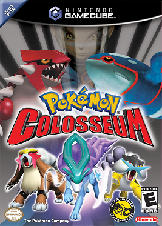

Tercera generación
El salto a GBA y primeros remakes
La tercera generación de Pokémon dio comienzo con los videojuegos Pokémon Rubí y Pokémon Zafiro, estrenados el 21 de noviembre de 2002 en Japón, el 19 de marzo de 2003 en Estados Unidos, el 3 de abril de 2003 en Australia y, finalmente, el 25 de julio de 2003 en Europa. Estos juegos fueron desarrollados para la consola Game Boy Advance, suponiendo un salto considerable respecto a los anteriores juegos de la línea principal.
Años más tarde, publicado el 16 de septiembre de 2004 en Japon, el 1 de mayo de 2005 en Norteamérica, el 9 de junio de 2005 en Australia y finalmente el 21 de octubre de 2005 en Europa, apareció Pokémon Esmeralda, una versión actualizada de Pokémon Rubí y Pokémon Zafiro con características nuevas y cambios en la historia.

Las versiones de Pokémon Rubí y Pokémon Zafiro cuentan con remakes de sexta generación, Pokémon Rubí Omega y Pokémon Zafiro Alfa
En esta generación también se incluyen los remakes de los juegos de primera generación, Pokémon Rojo Fuego y Pokémon Verde Hoja, lanzados en 2004.
Estas entregas son los títulos más vendidos de la consola Game Boy Advance, con un total aproximado de 16 millones de unidades. El top 3 de juegos más vendidos de esta consola es abarcado por todos los juegos de esta generación, ya que el top 2 son los remakes de los juegos de primera generación, con 12 millones de ventas, y el tercer juego más vendido es la versión de Pokémon Esmeralda, con 7 millones.
Respecto a la serie de animación de la franquicia, esta generación abarca desde la sexta hasta la novena temporada, haciendo un total de 469 capítulos. También incluye la quinta, sexta y séptima película.
Novedades
Las novedades de esta generación son las siguientes:
- Introducción de 135 nuevos Pokémon, pasando a hacer un total de 386 en la franquicia. Esta generación tiene algunos de los Pokémon legendarios y singulares más conocidos, como Rayquaza, Latios, Latias o Deoxys. De nuevo, además de un gran número de cadenas evolutivas, se añaden algunas preevoluciones como Azurill y Wynaut.
Los Pokémon legendarios representativos de estas ediciones, presentes en las portadas, son Groudon (Pokémon Rubí) y Kyogre (Pokémon Zafiro)
Starters de Hoenn Treecko
Torchic
Mudkip
- Las versiones Rubí y Zafiro presentan Pokémon exclusivos entre sí. A partir de esta generación, los juegos comienzan a tener un gran número de Pokémon ausentes, no están disponibles los 386 existentes, sino los 135 nuevos más 67 de regiones pasadas.
- La región en la que se basan los juegos es Hoenn, que se basa en Kyushu, la isla más al sur de las cuatro islas principales de Japón. Está formada por 9 ciudades y 6 pueblos. Al ser una isla, también contando con otras pequeñas islas que hacen un archipiélago, el agua cobra una gran importancia en esta región.
Mapa de Hoenn - Nuevas facciones de villanos, en este caso el Equipo Aqua en Pokémon Zafiro y el Equipo Magma en Pokémon Rubí.
- Adición de nuevos objetos, como las deportivas para avanzar más deprisa, o las bayas, con diversos usos, y la MO buceo para explorar debajo del agua.
- Se introducen por primera vez en la saga los combates dobles.
- Introducción de los Concursos Pokémon. También aparece la herramienta PokéNav, similar al PokéGear de Pokémon Oro y Pokémon Plata, con funciones de mapa, contacto de entrenadores, y condiciones de Pokémon para los concursos.
- Los Pokémon reciben un total de 103 movimientos, junto a nuevas características avanzadas como las naturalezas y las habilidades.
- El sistema de hora del juego se mantiene, pero se pierde el ciclo de día y noche, sirviendo únicamente la hora para sucesos específicos como una evolución dependiendo de la hora.
- Al estar en la plataforma Game Boy Advance, la mejora gráfica es significiativa.
Combate contra Groudon
La versión de Pokémon Esmeralda tiene algunas diferencias y características únicas. Algunas de las más importantes:
- Animación a los sprites de los Pokémon.
- Sprites para los objetos.
- La capacidad de combatir con líderes de gimnasios tras haberlos vencido, ahora en un combate doble.
- La introducción del Frente Batalla, una isla al sureste de la región a la que se accede tras convertirse en campeón.
- La posibilidad de obtener ambos legendarios, luchar contra ambos equipos rivales, y elegir entre Latias y Latios, todos ellos elementos únicos de cada versión de las anteriores
Historia
Según el personaje que elijamos, manejaremos a Bruno o a Aura. El personaje es nuevo en la región, habitando en Villa Raíz y con su padre como líder de gimnasio de Ciudad Petalia. El profesor Abedul, también residente de Villa Raíz, un día es atacado por un Poochyena salvaje, y el protagonista lo salva, por lo que decide regalarle su Pokémon inicial. Tras esto, nos pide buscar a su hijo/hija (dependiendo de la elección del personaje del jugador), y este nos reta a un combate. Después de volver a Villa Raíz, con una Pokédex de manos del Profesor y las deportivas de parte de nuestra madre, partimos hacia el gimnasio Pokémon donde está nuestro padre, Norman.
Allí llega un chico llamado Blasco, que será nuestro rival. Norman les enseña a capturar Pokémon y les dice que le podrán retar cuando tengan 4 medallas. Tras el primer gimnasio conocemos a Devon, que nos regala el PokéNav tras ayudarle, y nos pide entregar una carta a su hijo, Máximo.
Avanzando en la historia nos toparemos con el equipo villano correspondiente a la versión, que ha secuestrado a un astrónomo llamado Profesor Cozmo, al que rescatamos. Los villanos se han hecho con un meteorito con el que planean alterar el clima, y tras detenerlos y frustar sus planes se lo devolvemos al profesor y ponemos rumbo al quinto gimnasio.
Tras vencer el gimnasio de nuestro padre, podemos acceder al oeste de Hoenn para ir a los siguientes gimnasios. Mientras, debemos enfrentarnos de nuevo al Equipo Aqua/Magma, que planea despertar al Pokémon legendario, y lo logran tras ir a una cueva subterránea, lo que altera el clima de toda la región. El protagonista captura/vence al Pokémon y restablece la normalidad. Finalmente, el protagonista termina de reunir las medallas y se enfrenta al campeón de la liga, que es Máximo.
En Pokémon Esmeralda la historia es ligeramente distinta, con ambas bandas villanas coexistiendo y peleando entre sí, despertando a ambos Pokémon legendarios. Necesitaremos despertar al Pokémon Rayquaza para que calme a ambos.
Otros juegos
La tercera generación cuenta con importantes títulos spin-off, así como los primeros remakes de la saga, considerados parte de la línea principal.
- Pokémon Rojo Fuego y Pokémon Verde Hoja
Pokémon Rojo Fuego y Pokémon Verde Hoja son los remakes de los videojuegos de primera generación, Pokémon Rojo y Pokémon Azul. Aparecieron el 29 de enero de 2004 en Japón, el 9 de septimebre en América, el 9 de septimebre en Australia y el 1 de octubre en Europa.
Estos juegos contienen la misma historia que los originales, llevándolos a las mejoras posteriores de la saga como los nuevos gráficos, las naturalezas y habilidades, la crianza para obtener preevoluciones, la posibilidad de atrapar uno de los perros legendarios (dependiendo del starter elegido), y algunos Pokémon de generaciones posteriores.
Tras completar la historia principal, hay un nuevo postgame en las islas Archi7 con nuevas misiones secundarias, en las que además podemos encontrar algunos Pokémon de Johto y Hoenn.
Otra novedad es una especie de diario que recuerda al jugador las últimas acciones que hizo cada vez que comienza a jugar de nuevo.
- Pokémon Mundo misterioso: Equipo de rescate rojo y Equipo de rescate azul
Estos títulos son los primeros spin-off de la subsaga Mundo misterioso, enfocada en la exploración de mazmorras. Equipo de Rescate Rojo es un título para Game Boy Advance, mientras que Equipo de Rescate Azul es para Nintendo DS. Ambos aparecieron el 17 de noviembre de 2005 en Japón, y en 2006 en el resto del mundo.
En estos videojuegos controlaremos a un Pokémon, determinado por un test de personalidad inicial, y podremos elegir un compañero. Durante el juego, debemos recorrer mazmorras cumpliendo misiones de la historia, reclutando nuevos Pokémon y reuniendo objetos, con un sistema de movimiento por turnos en una cuadrícula.
La historia nos pone en la piel de un humano que, sin recordar qué ha ocurrido, se ha transformado en un Pokémon. En este nuevo mundo, junto a su compañero, deben formar un equipo de rescate, ya que las calamidades y el desequilibrio son cada vez mayores. Durante estas misiones conocemos al Equipo Bellaco, un grupo de Pokémon malvados que dificultan las cosas, y salvamos a diferentes Pokémon de toda la ciudad. Un día, el equipo conoce una profecía que dice que un humano que abandonó a su Pokémon sería renacido en uno y el mundo se desequilibraría. El equipo malvado convence a todos de que ese humano es nuestro protagonista, y son perseguidos por todos, obligados a escapar
Tras su huida, encuentran a Ninetales, el Pokémon de la leyenda, que confirma que la profecía es cierta, pero que no somos el humano de la profecía. Tras regresar y avanzar en la historia, el desequilibrio sigue aumentando y un meteorito se dirige al mundo, por lo que el equipo busca al Pokémon legendario Rayquaza para salvar el mundo. Lo logran y, tras cumplir su misión, el humano convertido en Pokémon ha cumplido su destino y regresa al mundo humano.
Existe un remake de octava generación para esos títulos: Pokémon Mundo misterioso: equipo de rescate DX
- Pokémon Ranger
Pokémon Ranger es el primer título de la subsaga Ranger, perteneciente al género de RPG de acción y publicado para la Nintendo DS el 23 de marzo de 2006 en Japón, el 30 de octubre de 2006 en América, el 7 de diciembre de 2006 en Australia y el 13 de abril de 2007 en Europa.
En la historia controlaremos a Selena o a Helio. Somos rangers, protectores de la naturaleza y los Pokémon, aceptados como miembros de la Unión Ranger. Debemos mejorar como protectores y hacer frente al equipo malvado Go-Rock.
En cuanto al sistema de juego, en lugar de los combates tradicionales, se utiliza el Capturador, un dispositivo Ranger que permite capturar a los Pokémon haciendo círculos alrededor suya. Además, el objetivo no es formar un equipo Pokémon, y no los conservaremos, sino que sus habilidades nos serán útiles en momentos determinados.
- Pokémon Colosseum

Pokémon Colosseum es un título RPG publicado para Gamecube el 21 de noviembre de 2003 en Japón, y en 2004 en el resto del mundo. Está enfocado en combates similares a los de Pokémon Stadium, pero también cuenta con un modo aventura propio.
La historia gira en torno a los Pokémon Oscuros, unos Pokémon que han sido convertidos en máquinas de lucha sin sentimientos y repartidos por la región por el equipo Cífer. También está el equipo Cepo, con una máquina similar a un braoz robótico que permite robar Pokémon a otros. El protagonista roba dicho invento. Tras el robo llega a un lugar donde ve a hombres misteriosos con un saco, con los que más adelante se vuelve a cruzar y es derrotado por ellos, que huyen. En el saco había una chica que dice tener poderes relacionados con los Pokémon Oscuros, por lo que la querían secuestrar, y aquí comienza una historia para purificarlos.
- Pokémon XD: Tempestad oscura
Pokémon XD: Tempestad oscura es la secuela de Pokémon Colosseum, publicada para Gamecube el 5 de agosto de 2005 en Japón, y más tarde el mismo año en el resto del mundo.
La historia se ambienta 5 años después, en la misma región. De nuevo, la trama gira alrededor de los Pokémon Oscuros, a los que debemos purificar haciendo uso del Poke Cepo y una cámara de purificación que está desarrollando el Profesor Cío, pero este es secuestrado por el equipo Cífer. Tras rescatarle, nuestro protagonista, Michael, viaja por toda la región purificando Pokémon.
Destaca la presencia de un mayor número de Pokémon que en su precuela, con un total de 83.
- Otros títulos secundarios de esta generación son Pokémon Box, Pokémon Channel, Pokémon Dash o Pokémon Link!